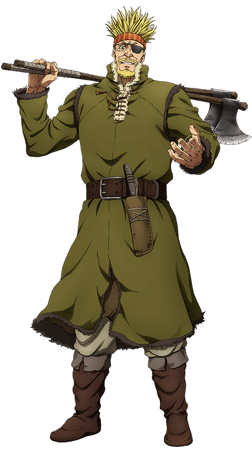
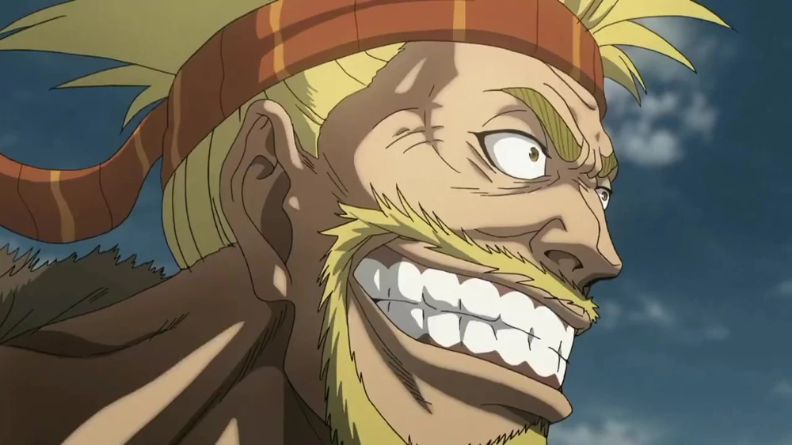
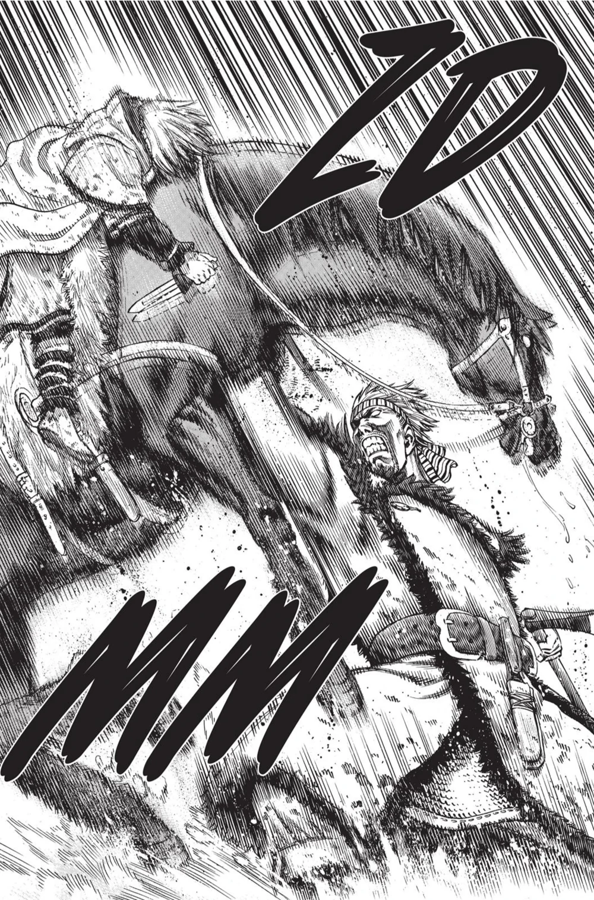
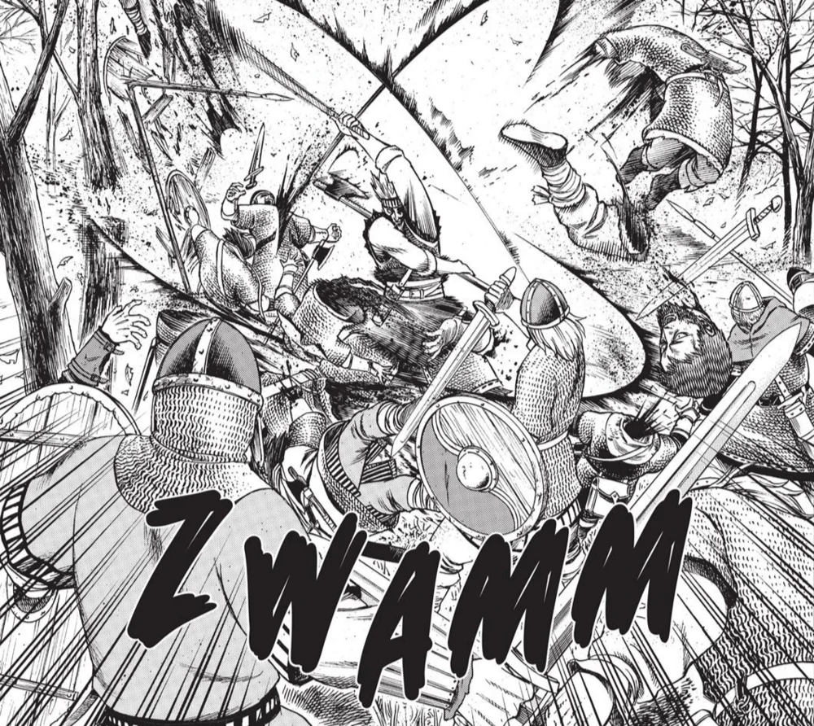

Thorkell the Tall
About Thorkell
Thorkell, also known as Thorkell the Tall, is a former Jomsviking commander, and currently a commander serving under Canute. He fought for the Danes his entire life, until he switched sides to fight for the English during 1013 because it would be more interesting. He commanded his own band while fighting for the English. Due to his actions, he is a Major Antagonist in the War Arc.
Due to his colossal strength, he's considered one of the strongest Vikings alive. He is the brother of Sigvaldi, the Jomsvikings chief, uncle of Helga, uncle-in-law of Thors, great uncle of Ylva and Thorfinn, and father of Cordelia (Halvar).
Appearance
Thorkell is an extremely tall man, towering over everyone who meets him, as his epithet indicates, also being very muscular and covered with scars, with spiky blond hair held up by a bandana and a small beard. He lost the tips of his right ring and pinky fingers in his first duel with Thorfinn and later lost his left eye in their second duel, prompting the use of an eyepatch.
In the Year 987, Thorkell pretty mostly the same physical characteristics as he does in the present, except that he was less muscular and his hair was shorter. He was also shown using only 1 two-handed poleaxe with both hands, although another flashback showed that not long after, he began using 2 two-handed poleaxes in each hand, like he does in the present.
Personality
Thorkell is a jolly, fun-loving man, in and out of combat. He's almost always laughing and smiling When deprived of combat for too long, he becomes far more gloomy and irritable. He isn't necessarily cruel, nor seems to enjoy inflicting pain, especially on weaker opponents or civilians.
He is only motivated to fight against people who can protect themselves, mainly vikings and soldiers. When he encounters an enemy without a weapon, Thorkell would even give said enemy a weapon to give the opportunity to die a glorious death in combat and go to Valhalla instead of killing them outright.
Abilities
 Superhuman Strength:Thorkell possesses superhuman strength, with the only person ever being able to beat him in the past being Thors. Thorfinn stated that one punch from Thorkell would be enough to kill him. Despite being massively huge, Thorkell is quick in close combat.
Superhuman Endurance:On top of his strength, he possesses inhuman resilience and a high pain tolerance, capable of taking heavy damage and laughing it off later.For example, Thorkell didn't even flinch when he got stabbed through the hand and lost 2 fingers.
 Superhuman Speed and Reflexes:Despite his immense size, Thorkell is surprisingly fast. While unarmed and in close combat, he forced the quick Thorfinn to use his agility to dodge his punches. He can keep up with Garm, who can dodge arrows with ease.Thorkell also once threw a spear from over a kilometer away at over half the speed of sound, and impaled 4 vikings with it.